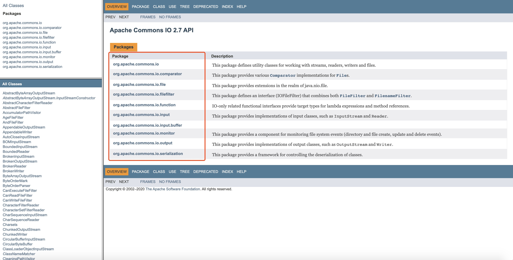

概述 commons-io 是一款处理 IO 流的工具，封装了很多处理 IO 流和文件的方法，可以大大简化我们处理 IO 流和操作文件的代码。从 commons-io 的官方使用文档可以看出，它主要分为工具类、尾端类、行迭代器、文件过滤器、文件比较器和扩展流。
官网地址：http://commons.apache.org/proper/commons-io/
下载：http://commons.apache.org/proper/commons-io/download_io.cgi

工具类 org.apache.commons.io 包下包含了 FileUtils、IOUtils、FilenameUtils 和 FileSystemUtils 等，前三者的方法并没有多大的区别，只是操作的对象不同，故名思议：FileUtils 主要操作 File 类，IOUtils 主要操作 IO 流，FilenameUtils 则是操作文件名，FileSystemUtils 包含了一些 JDK 没有提供的用于访问文件系统的实用方法。下面我们就来总结下这些工具类的具体用法。
maven 依赖1 2 3 4 5 6 <dependency > <groupId > commons-io</groupId > <artifactId > commons-io</artifactId > <version > 2.7</version > </dependency >
FileUtils 常用常量1 2 3 4 5 6 7 8 9 10 11 12 13 14 15 16 17 18 19 20 21 22 23 24 25 26 27 28 29 30 31 public static final long ONE_KB = 1024 ; public static final BigInteger ONE_KB_BI = BigInteger.valueOf(ONE_KB); public static final long ONE_MB = ONE_KB * ONE_KB; public static final BigInteger ONE_MB_BI = ONE_KB_BI.multiply(ONE_KB_BI); private static final long FILE_COPY_BUFFER_SIZE = ONE_MB * 30 ; public static final long ONE_GB = ONE_KB * ONE_MB; public static final BigInteger ONE_GB_BI = ONE_KB_BI.multiply(ONE_MB_BI); public static final long ONE_TB = ONE_KB * ONE_GB; public static final BigInteger ONE_TB_BI = ONE_KB_BI.multiply(ONE_GB_BI); public static final long ONE_PB = ONE_KB * ONE_TB; public static final BigInteger ONE_PB_BI = ONE_KB_BI.multiply(ONE_TB_BI); public static final long ONE_EB = ONE_KB * ONE_PB; public static final BigInteger ONE_EB_BI = ONE_KB_BI.multiply(ONE_PB_BI); public static final BigInteger ONE_ZB = BigInteger.valueOf(ONE_KB).multiply(BigInteger.valueOf(ONE_EB)); public static final BigInteger ONE_YB = ONE_KB_BI.multiply(ONE_ZB); public static final File[] EMPTY_FILE_ARRAY = new File[0 ];
FileUtils 常用方法getFile、getTempDirectory、getUserDirectory、byteCountToDisplaySize、sizeOf、sizeOfDirectory
getFile(String... names)：获取指定文件。getFile(File directory, String... names)：获取指定目录下的指定文件。getTempDirectory()：获取系统临时目录 File 对象。getTempDirectoryPath()：获取系统临时目录路径。getUserDirectory()：获取用户主目录 File 对象。getUserDirectoryPath()：获取用户主目录路径。byteCountToDisplaySize(long size)：以可读的方式，返回文件的大小 EB、PB、TB、GB、MB、KB or bytes。byteCountToDisplaySize(BigInteger size)：以可读的方式，返回文件的大小 EB、PB、TB、GB、MB、KB or bytes。sizeOf(File file)：读取文件大小，返回 long。sizeOfAsBigInteger(File file)：读取文件大小，返回 BigInteger。sizeOfDirectory(File directory)：目录，级联计算文件下的所有文件大小，返回 long。sizeOfDirectoryAsBigInteger(File directory)：目录，级联计算文件下的所有文件大小，返回 BigInteger。toFile(URL url)：根据 URL 获取文件（new URL(“file://Users/vincent/IDEA_Project/my_project/IO/touch”)）。toFiles(URL... urls)：根据多个 URL 获取多个文件文件，返回 File[] 数组。toURLs(File... files)：文件地址转为 URL。copyInputStreamToFile(InputStream source, File destination)：将输入流的内容复制到新文件。directoryContains(File directory, File child)：判断父目录是否包含子目录或者子文件。listFiles(File directory, String[] extensions, boolean recursive)：根据 extensions 拓展规则，搜索文件；recursive 是否递归，返回文件迭代器。listFiles(File directory, String[] extensions, boolean recursive)：根据 extensions 拓展规则，搜索文件；recursive 是否递归，返回文件集合。listFilesAndDirs(File directory, IOFileFilter fileFilter, IOFileFilter dirFilter)：根据 FileFileFilter 自定义文件过滤器，和 DirectoryFileFilter 自定义目录过滤器，搜索文件和目录，返回文件和目录集合。
例：
1 2 3 4 5 6 7 8 9 10 11 12 13 14 15 16 17 18 19 20 21 22 23 24 25 26 27 28 29 30 31 32 33 34 35 36 37 38 39 40 41 42 43 44 45 46 47 48 49 50 51 52 53 54 55 56 57 58 59 60 61 62 63 64 65 66 67 68 69 70 71 72 @Test public void t () throws IOException File file = FileUtils.getFile("/Users/vincent/IDEA_Project/my_project/IO/a.txt" ); File file1 = FileUtils.getFile(new File("/Users/vincent/IDEA_Project/my_project/IO/" ), "123.txt" , "456.txt" ); File tempDirectory = FileUtils.getTempDirectory(); System.out.println(tempDirectory); String tempDirectoryPath = FileUtils.getTempDirectoryPath(); System.out.println(tempDirectoryPath); File userDirectory = FileUtils.getUserDirectory(); System.out.println(userDirectory); String userDirectoryPath = FileUtils.getUserDirectoryPath(); System.out.println(userDirectoryPath); String byteCountToDisplaySize = FileUtils.byteCountToDisplaySize(10000000 ); System.out.println(byteCountToDisplaySize); String byteCountToDisplaySize1 = FileUtils.byteCountToDisplaySize(1 ); System.out.println(byteCountToDisplaySize1); Long lon = FileUtils.sizeOf(new File("/Users/vincent/IDEA_Project/my_project/IO" )); System.out.println(lon); BigInteger bigInteger = FileUtils.sizeOfAsBigInteger(new File("/Users/vincent/IDEA_Project/my_project/IO" )); System.out.println(bigInteger); File file2 = FileUtils.toFile(new URL("file://Users/vincent/IDEA_Project/my_project/IO" )); System.out.println(file2); URL[] urls = FileUtils.toURLs(new File("/Users/vincent/IDEA_Project/my_project/IO" )); Arrays.stream(urls).forEach(System.out::println); FileUtils.copyInputStreamToFile(new FileInputStream("/Users/vincent/IDEA_Project/my_project/IO/fileutils/abc/a.txt" ), new File("/Users/vincent/IDEA_Project/my_project/IO/fileutils/a.txt" )); boolean b = FileUtils.directoryContains(new File("/Users/vincent/IDEA_Project/my_project/IO/fileutils/abc/" ), new File("/Users/vincent/IDEA_Project/my_project/IO/fileutils/abc/a1.txt" )); System.out.println(b); Iterator<File> iterateFiles = FileUtils.iterateFiles(new File("/Users/vincent/IDEA_Project/my_project/IO/fileutils" ), new String[]{"png" , "txt" }, true ); while (iterateFiles.hasNext()) { File next = iterateFiles.next(); System.out.println(next); } Collection<File> files = FileUtils.listFiles(new File("/Users/vincent/IDEA_Project/my_project/IO/fileutils" ), new String[]{"png" , "txt" }, true ); files.forEach(System.out::println); Collection<File> listFilesAndDirs = FileUtils.listFilesAndDirs(new File("/Users/vincent/IDEA_Project/my_project/IO/fileutils" ), new FileFileFilter() { @Override public boolean accept (File file) return file.getPath().endsWith("png" ); } }, DirectoryFileFilter.DIRECTORY); listFilesAndDirs.forEach(System.out::println); }
touch 和 forceMkdirtouch(File file)：创建文件，如果文件存在则更新时间；如果不存在，创建一个空文件。
forceMkdir(File directory)：强制创建文件目录，如果文件目录存在，会抛出异常。
1 2 touch(File file) forceMkdir(File directory)
例：
1 2 3 4 5 6 7 8 9 @Test public void createFileOrDirectory () throws IOException FileUtils.touch(new File("/Users/vincent/IDEA_Project/my_project/IO/touch.txt" )); FileUtils.forceMkdir(new File("/Users/vincent/IDEA_Project/my_project/IO/touch" )); }
copyFilecopyFile(File srcFile, File destFile)：此方法将目录 A 下的 abc.txt 拷贝到目录 B 下的 abc.txt；如果有同名文件则替换，没有则新建。
1 2 3 copyFile(File srcFile, File destFile) copyFile(File srcFile, File destFile, boolean preserveFileDate) copyFile(File input, OutputStream output)
例：
1 2 3 4 5 6 7 8 9 @Test public void copyFile () throws IOException File srcFile = new File("/Users/vincent/IDEA_Project/my_project/IO/fileutils/abc/abc.txt" ); File destFile = new File("/Users/vincent/IDEA_Project/my_project/IO/fileutilscopy/abc/abc.txt" ); FileUtils.copyFile(srcFile, destFile); }
copyFileToDirectorycopyFileToDirectory(File srcFile, File destDir)：此方法将目录 A 下的 abc.txt 拷贝到指定目录下，如果有同名文件则替换，没有则新建。
1 2 copyFileToDirectory(File srcFile, File destDir) copyFileToDirectory(File sourceFile, File destinationDir, boolean preserveFileDate)
例：
1 2 3 4 5 6 7 8 9 @Test public void copyFileToDirectory () throws IOException File srcFile = new File("/Users/vincent/IDEA_Project/my_project/IO/fileutils/abc/abc.txt" ); File destDir = new File("/Users/vincent/IDEA_Project/my_project/IO/fileutilscopy" ); FileUtils.copyFileToDirectory(srcFile, destDir); }
copyDirectorycopyDirectory(File srcDir, File destDir)：文件目录复制。
1 2 3 4 5 copyDirectory(File srcDir, File destDir) copyDirectory(File srcDir, File destDir, boolean preserveFileDate) copyDirectory(File srcDir, File destDir, FileFilter filter) copyDirectory(File srcDir, File destDir, FileFilter filter, boolean preserveFileDate) copyDirectoryToDirectory(File sourceDir, File destinationDir)
例：
1 2 3 4 5 6 7 8 9 10 11 12 13 14 15 16 17 18 @Test public void copyDirectory () throws IOException File srcDir = new File("/Users/vincent/IDEA_Project/my_project/IO/fileutils" ); File destDir = new File("/Users/vincent/IDEA_Project/my_project/IO/fileutilscopy" ); FileUtils.copyDirectory(srcDir, destDir); File destDir2 = new File("/Users/vincent/IDEA_Project/my_project/IO/fileutilscopy2" ); FileUtils.copyDirectory(srcDir, destDir2, DirectoryFileFilter.DIRECTORY); }
copyDirectoryToDirectorycopyDirectoryToDirectory(File sourceDir, File destinationDir)：此方法将目录 A 下的所有的文件夹及文件（包含目录 A），复制到目录 B 下；如果有同名目录则合并，如果有同名文件则替换。
1 copyDirectoryToDirectory(File sourceDir, File destinationDir)
例：
1 2 3 4 5 6 7 8 9 10 11 12 13 14 15 16 17 18 19 20 21 22 23 24 25 26 27 28 29 30 31 32 @Test public void copyDirectoryToDirectory () throws IOException File srcDir = new File("/Users/vincent/IDEA_Project/my_project/IO/fileutils/abc" ); File destDir = new File("/Users/vincent/IDEA_Project/my_project/IO/fileutilscopy" ); FileUtils.copyDirectoryToDirectory(srcDir, destDir); }
moveDirectorymoveDirectory(File srcDir, File destDir)：移动目录（复制并删除），目标目录与原目录中如果存在同名目录会报错（相当与重命名）。
moveDirectoryToDirectory(File src, File destDir, boolean createDestDir)：移动目录到目标目录下；createDestDir 目录不存在是否创建。
moveFile(File srcFile, File destFile)：移动文件（复制并删除），目标目录下存在文件则报错（也可重命名）。
moveFileToDirectory(File srcFile, File destDir, boolean createDestDir)：移动文件到目标目录下；createDestDir 目录不存在是否创建。
1 2 3 4 moveDirectory(File srcDir, File destDir) moveDirectoryToDirectory(File src, File destDir, boolean createDestDir) moveFile(File srcFile, File destFile) moveFileToDirectory(File srcFile, File destDir, boolean createDestDir)
例：
1 2 3 4 5 6 7 8 9 10 11 12 13 14 15 16 17 18 @Test public void moveDirectory () throws IOException File srcDir = new File("/Users/vincent/IDEA_Project/my_project/IO/fileutils/abcd" ); File destDir = new File("/Users/vincent/IDEA_Project/my_project/IO/fileutils2" ); FileUtils.moveDirectory(srcDir, destDir); FileUtils.moveDirectoryToDirectory(srcDir, destDir, true ); File srcFile = new File("/Users/vincent/IDEA_Project/my_project/IO/fileutils/abcd/a.txt" ); File destFile = new File("/Users/vincent/IDEA_Project/my_project/IO/fileutils/abcd/ab.txt" ); FileUtils.moveFile(srcFile, destFile); FileUtils.moveFileToDirectory(srcFile, destDir, false ); }
openInputStream(File file) 和 openOutputStream(File file)：获取文件输入输出流。
1 2 openInputStream(File file) openOutputStream(File file)
例：
1 2 3 4 5 6 7 8 9 10 11 12 @Test public void openInputAndOutStream () throws IOException InputStream in = FileUtils.openInputStream(new File("/Users/vincent/IDEA_Project/my_project/IO/inputStream.txt" )); File file = new File("/Users/vincent/IDEA_Project/my_project/IO/outputStream.txt" ); OutputStream os = FileUtils.openOutputStream(file); os = FileUtils.openOutputStream(file, true ); }
deleteDirectory、deleteQuietly、cleanDirectory、forceDelete、forceDeleteOnExitdeleteDirectory(File directory)：删除目录或文件，无法删除会抛异常。
deleteQuietly(File file)：安静删除目录或文件，无法删除时也不会抛异常。
cleanDirectory(File directory)：删除该目录下的所有内容（保留该目录）。
forceDelete(File file)：强制删除目录或文件。
forceDeleteOnExit(File file)：当 JVM 退出时，删除目录或文件。
1 2 3 4 5 deleteDirectory(File directory) deleteQuietly(File file) cleanDirectory(File directory) forceDelete(File file) forceDeleteOnExit(File file)
例：
1 2 3 4 5 6 7 8 9 10 11 12 13 14 15 @Test public void deleteDirectoryAndQuietly () throws IOException FileUtils.deleteDirectory(new File("/Users/vincent/IDEA_Project/my_project/IO/dir" )); FileUtils.deleteQuietly(new File("/Users/vincent/IDEA_Project/my_project/IO/dir2" )); FileUtils.cleanDirectory(new File("/Users/vincent/IDEA_Project/my_project/IO/fileutilscopy" )); FileUtils.forceDelete(new File("/Users/vincent/IDEA_Project/my_project/IO/readerAndWriter2.txt" )); FileUtils.forceDeleteOnExit(new File("/Users/vincent/IDEA_Project/my_project/IO/readerAndWriter3.txt" )); }
readXxxreadFileToByteArray(File file)：读取目标文件，返回文件内容的 bytes 数组。
readFileToString(File file)：读取目标文件，返回文件内容字符串。
readLines(File file)：读取目标文件每一行数据，返回 list。
lineIterator(File file)：读取目标文件每一行数据，返回迭代器。
1 2 3 4 5 6 7 8 9 readFileToByteArray(File file) readFileToString(File file) readFileToString(File file, Charset charsetName) readFileToString(File file, String charsetName) readLines(File file) readLines(File file, Charset charset) readLines(File file, String charsetName) lineIterator(File file) lineIterator(File file, String charsetName)
例：
1 2 3 4 5 6 7 8 9 10 11 12 13 14 15 16 17 18 19 20 21 22 23 24 25 26 27 28 29 30 31 32 33 34 35 36 37 38 39 40 41 @Test public void readXxx () throws IOException File file = new File("/Users/vincent/IDEA_Project/my_project/IO/fileutils/abc/a.txt" ); byte [] readFileToByteArray = FileUtils.readFileToByteArray(file); System.out.println(new String(readFileToByteArray)); System.out.println(); String readFileToString = FileUtils.readFileToString(file, "UTF-8" ); System.out.println(readFileToString); String readFileToStringCharset = FileUtils.readFileToString(file, StandardCharsets.UTF_8); System.out.println(readFileToStringCharset); System.out.println(); List<String> readLines = FileUtils.readLines(file, "UTF-8" ); readLines.forEach(System.out::println); List<String> readLinesCharset = FileUtils.readLines(file, StandardCharsets.UTF_8); readLinesCharset.forEach(System.out::println); System.out.println(); LineIterator lineIterator = FileUtils.lineIterator(file); while (lineIterator.hasNext()) { String next = lineIterator.next(); System.out.println(next); } LineIterator lineIteratorCharset = FileUtils.lineIterator(file, "UTF-8" ); while (lineIteratorCharset.hasNext()) { String next = lineIteratorCharset.next(); System.out.println(next); } }
writeXxxwrite(File file, CharSequence data, Charset charset, boolean append)：将字符串写入目标文件，并设置字符集；append 是否追加（true：追加，false：覆盖）。
writeByteArrayToFile(File file, byte[] data, boolean append)：将文件内容以 bytes 数组写入文件；append 是否追加（true：追加，false：覆盖）。
writeLines(File file, String charsetName, Collection<?> lines, String lineEnding, boolean append)：将集合中的数据逐行写入文件中，并设置字符集，并设置行与行直接的分隔符；append 是否追加（true：追加，false：覆盖）。
writeStringToFile(File file, String data, Charset charset, boolean append)：将字符串写入文件，并设置字符集；append 是否追加（true：追加，false：覆盖）。
1 2 3 4 5 6 7 8 9 10 11 12 13 14 15 16 17 18 19 20 21 22 23 24 write(File file, CharSequence data) write(File file, CharSequence data, boolean append) write(File file, CharSequence data, Charset charset) write(File file, CharSequence data, Charset charset, boolean append) write(File file, CharSequence data, String charsetName) write(File file, CharSequence data, String charsetName, boolean append) writeByteArrayToFile(File file, byte [] data) writeByteArrayToFile(File file, byte [] data, boolean append) writeByteArrayToFile(File file, byte [] data, int off, int len) writeByteArrayToFile(File file, byte [] data, int off, int len, boolean append) writeLines(File file, Collection<?> lines) writeLines(File file, Collection<?> lines, boolean append) writeLines(File file, Collection<?> lines, String lineEnding) writeLines(File file, Collection<?> lines, String lineEnding, boolean append) writeLines(File file, String charsetName, Collection<?> lines) writeLines(File file, String charsetName, Collection<?> lines, boolean append) writeLines(File file, String charsetName, Collection<?> lines, String lineEnding) writeLines(File file, String charsetName, Collection<?> lines, String lineEnding, boolean append) writeStringToFile(File file, String data) writeStringToFile(File file, String data, boolean append) writeStringToFile(File file, String data, Charset charset) writeStringToFile(File file, String data, Charset charset, boolean append) writeStringToFile(File file, String data, String charsetName) writeStringToFile(File file, String data, String charsetName, boolean append)
例：
1 2 3 4 5 6 7 8 9 10 11 12 13 14 15 16 17 18 19 20 21 22 23 24 25 26 27 28 29 30 31 32 33 34 35 36 37 38 39 40 41 42 43 44 45 46 47 48 49 50 51 52 53 54 55 56 57 58 59 60 61 62 @Test public void writeXxx () throws IOException File file = new File("/Users/vincent/IDEA_Project/my_project/IO/fileutils/abc/abc.txt" ); FileUtils.write(file, "write(File file, CharSequence data)\n" ); FileUtils.write(file, "write(File file, CharSequence data, boolean append)\n" , true ); FileUtils.write(file, "write(File file, CharSequence data, Charset charset)\n" , StandardCharsets.UTF_8); FileUtils.write(file, "write(File file, CharSequence data, Charset charset, boolean append)\n" , StandardCharsets.UTF_8, true ); FileUtils.write(file, "(File file, CharSequence data, String charsetName)\n" , "UTF-8" ); FileUtils.write(file, "write(File file, CharSequence data, String charsetName, boolean append)\n" , "UTF-8" , true ); File file2 = new File("/Users/vincent/IDEA_Project/my_project/IO/fileutils/abc/abcd.txt" ); byte [] readFileToByteArray = FileUtils.readFileToByteArray(file2); FileUtils.writeByteArrayToFile(file, readFileToByteArray); FileUtils.writeByteArrayToFile(file, readFileToByteArray, true ); FileUtils.writeByteArrayToFile(file, readFileToByteArray, 0 , new String(readFileToByteArray).length()); FileUtils.writeByteArrayToFile(file, readFileToByteArray, 0 , new String(readFileToByteArray).length(), true ); List<String> readLines = FileUtils.readLines(file2, StandardCharsets.UTF_8); FileUtils.writeLines(file, readLines); FileUtils.writeLines(file, readLines, true ); FileUtils.writeLines(file, readLines, "\n" ); FileUtils.writeLines(file, readLines, "\n" , true ); FileUtils.writeLines(file, "UTF-8" , readLines); FileUtils.writeLines(file, "UTF-8" , readLines, true ); FileUtils.writeLines(file, "UTF-8" , readLines, "\n" ); FileUtils.writeLines(file, "UTF-8" , readLines, "\n" , true ); String readFileToString = FileUtils.readFileToString(file2, StandardCharsets.UTF_8); FileUtils.writeStringToFile(file, readFileToString); FileUtils.writeStringToFile(file, readFileToString, true ); FileUtils.writeStringToFile(file, readFileToString, StandardCharsets.UTF_8); FileUtils.writeStringToFile(file, readFileToString, StandardCharsets.UTF_8, true ); FileUtils.writeStringToFile(file, readFileToString, "UTF-8" ); FileUtils.writeStringToFile(file, readFileToString, "UTF-8" , true ); }
isFileNewer 和 isFileOlderisFileNewer(File file, Date date)：比较指定的文件是否比指定的日期新。
isFileNewer(File file, File reference)：比较前一个文件是否比后一个文件新。
isFileNewer(File file, Instant instant)：比较指定的文件是否比指定的瞬间更新。
isFileNewer(File file, long timeMillis)：比较指定的文件是否比指定的时间引用新。
isFileOlder(File file, Date date)：比较指定的文件是否比指定的日期旧。
isFileOlder(File file, File reference)：比较前一个文件是否比后一个文件旧。
isFileOlder(File file, Instant instant)：比较指定的文件是否比指定的瞬间更旧。
isFileOlder(File file, long timeMillis)：比较指定的文件是否比指定的时间引用旧。
1 2 3 4 5 6 7 8 isFileNewer(File file, Date date) isFileNewer(File file, File reference) isFileNewer(File file, Instant instant) isFileNewer(File file, long timeMillis) isFileOlder(File file, Date date) isFileOlder(File file, File reference) isFileOlder(File file, Instant instant) isFileOlder(File file, long timeMillis)
例：
1 2 3 4 5 6 7 8 9 10 11 12 13 14 15 16 17 18 19 20 21 22 23 24 25 26 27 28 29 30 31 32 33 34 35 36 37 38 39 40 41 @Test public void isFileNewerOrOld () File file1 = new File("/Users/vincent/IDEA_Project/my_project/IO/copyFile.png" ); File file2 = new File("/Users/vincent/IDEA_Project/my_project/IO/new.txt" ); Calendar calendar = Calendar.getInstance(); calendar.set(2020 , Calendar.SEPTEMBER, 11 ); Date time = calendar.getTime(); boolean fileNewer = FileUtils.isFileNewer(file2, time); System.out.println(fileNewer); boolean fileNewer2 = FileUtils.isFileNewer(file1, file2); System.out.println(fileNewer2); boolean fileNewer3 = FileUtils.isFileNewer(file2, file1); System.out.println(fileNewer3); boolean fileNewer4 = FileUtils.isFileNewer(file2, System.currentTimeMillis()); System.out.println(fileNewer4); System.out.println(); boolean fileOlder = FileUtils.isFileOlder(file2, time); System.out.println(fileOlder); boolean fileOlder2 = FileUtils.isFileOlder(file1, file2); System.out.println(fileOlder2); boolean fileOlder3 = FileUtils.isFileOlder(file2, file1); System.out.println(fileOlder3); boolean fileOlder4 = FileUtils.isFileOlder(file2, System.currentTimeMillis()); System.out.println(fileOlder4); }
If you like this blog or find it useful for you, you are welcome to comment on it. You are also welcome to share this blog, so that more people can participate in it. If the images used in the blog infringe your copyright, please contact the author to delete them. Thank you !